1. TEA / 1. चाय
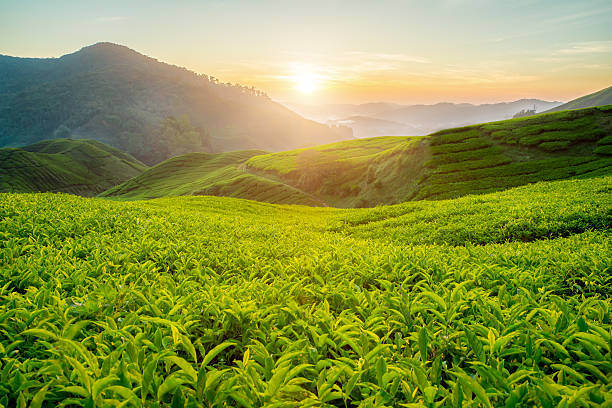
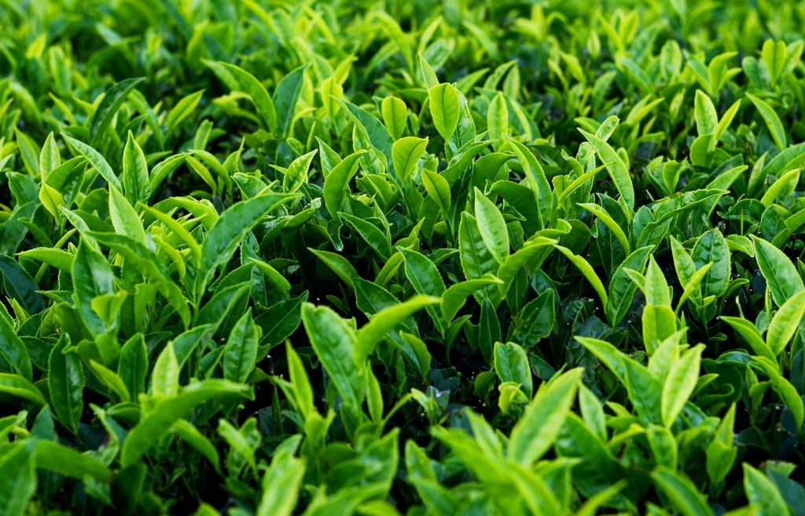
About the crop and its nutrients: Tea is a beverage crop cultivated for its leaves, which are used to
produce various types of tea like black tea, green tea, and oolong tea.
Market share in Tripura: Tea cultivation holds a significant market share in Tripura, with several tea
estates and small tea growers contributing to the production.
Soil type: Tea grows well in acidic, well-drained soils with high organic matter content.
Season: Tea cultivation is a year-round activity, with plucking of tea leaves done at regular intervals.
Export destinations: Tea produced in Tripura is exported to both domestic and international markets,
with major export destinations including other states in India and countries like Bangladesh
फसल और इसके पोषक तत्वों के बारे में: चाय एक पेय फसल है जिसकी खेती इसकी पत्तियों के लिए की जाती है, जिनका
उपयोग विभिन्न प्रकार की चाय जैसे काली चाय, हरी चाय और ऊलोंग चाय के उत्पादन के लिए किया जाता है।
त्रिपुरा में बाजार हिस्सेदारी: चाय की खेती त्रिपुरा में एक महत्वपूर्ण बाजार हिस्सेदारी रखती है, जिसमें
कई चाय बागान और छोटे चाय उत्पादक उत्पादन में योगदान देते हैं।
मिट्टी का प्रकार: चाय अम्लीय, उच्च कार्बनिक पदार्थ वाली अच्छी जल निकासी वाली मिट्टी में अच्छी तरह से
उगती है।
मौसम: चाय की खेती साल भर चलने वाली गतिविधि है, जिसमें नियमित अंतराल पर चाय की पत्तियों को तोड़ा जाता है।
निर्यात गंतव्य: त्रिपुरा में उत्पादित चाय को घरेलू और अंतर्राष्ट्रीय दोनों बाजारों में निर्यात किया जाता
है, जिसमें भारत के अन्य राज्य और बांग्लादेश जैसे प्रमुख निर्यात गंतव्य शामिल हैं।
2. RICE / 2. चावल
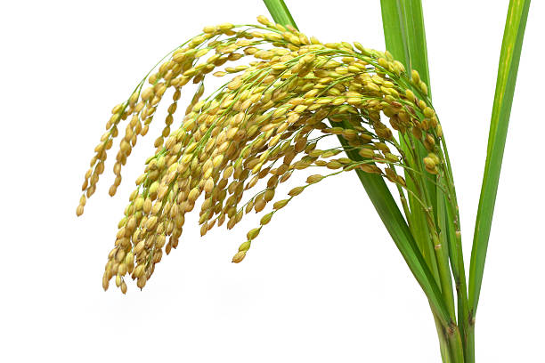
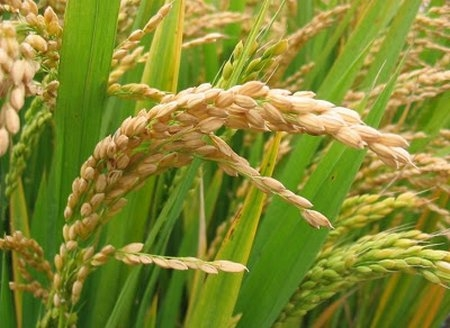
About the crop and its nutrients: Rice is a staple food crop widely cultivated in Tripura. It is a good
source of carbohydrates and provides essential nutrients like vitamins and minerals.
Market share in Tripura: Rice holds the highest market share among crops in Tripura, with over 70% of
the cultivated area dedicated to rice cultivation.
Soil type: Rice is grown in a variety of soils including alluvial, loamy, and clayey soils.
Season: Rice is mainly cultivated during the Kharif season, which starts from June and extends to
October.
Export destinations: Surplus rice production in Tripura is often exported to neighboring states like
Assam and West Bengal.
फसल और उसके पोषक तत्वों के बारे में: चावल एक प्रमुख खाद्य फसल है जिसकी त्रिपुरा में व्यापक रूप से खेती
की जाती है। यह कार्बोहाइड्रेट का अच्छा स्रोत है और विटामिन और खनिज जैसे आवश्यक पोषक तत्व प्रदान करता है।
त्रिपुरा में बाजार हिस्सेदारी: त्रिपुरा में फसलों के बीच चावल की बाजार हिस्सेदारी सबसे अधिक है, जहां 70%
से अधिक खेती योग्य क्षेत्र चावल की खेती के लिए समर्पित है।
मिट्टी का प्रकार: चावल विभिन्न प्रकार की मिट्टी में उगाया जाता है जिसमें जलोढ़, दोमट और चिकनी मिट्टी
शामिल हैं।
मौसम: चावल की खेती मुख्य रूप से खरीफ मौसम के दौरान की जाती है, जो जून से शुरू होकर अक्टूबर तक चलती है।
निर्यात गंतव्य: त्रिपुरा में अधिशेष चावल उत्पादन अक्सर असम और पश्चिम बंगाल जैसे पड़ोसी राज्यों में
निर्यात किया जाता है।
3. RUBBER / 3. रबड़
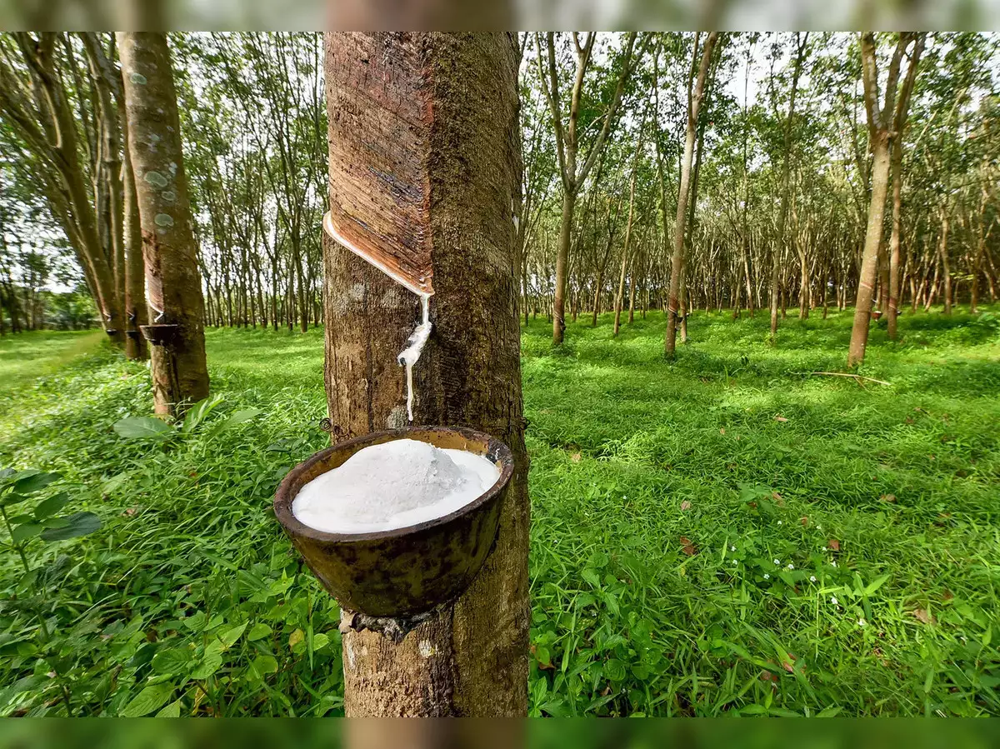
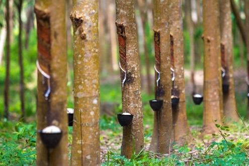
About the crop and its nutrients: Rubber is a tropical crop primarily cultivated for its latex, which is
used in various industries including automotive and manufacturing.
Market share in Tripura: Rubber cultivation has been gaining popularity in Tripura, especially in areas
with suitable agro-climatic conditions.
Soil type: Rubber trees prefer well-drained soils with good moisture retention capability, such as sandy
loam and lateritic soils.
Season: Rubber tapping is usually done throughout the year, but peak tapping seasons vary depending on
local conditions.
Export destinations: Rubber produced in Tripura is mainly used for domestic consumption, and surplus
rubber may be exported to other states or processed for various industrial purposes.
फसल और इसके पोषक तत्वों के बारे में: रबर एक उष्णकटिबंधीय फसल है जिसकी खेती मुख्य रूप से इसके लेटेक्स के
लिए की जाती है, जिसका उपयोग ऑटोमोटिव और विनिर्माण सहित विभिन्न उद्योगों में किया जाता है।
त्रिपुरा में बाजार हिस्सेदारी: रबर की खेती त्रिपुरा में लोकप्रियता हासिल कर रही है, खासकर उपयुक्त
कृषि-जलवायु परिस्थितियों वाले क्षेत्रों में।
मिट्टी का प्रकार: रबर के पेड़ अच्छी नमी बनाए रखने की क्षमता वाली अच्छी जल निकासी वाली मिट्टी पसंद करते
हैं, जैसे रेतीली दोमट और लैटेराइट मिट्टी।
सीज़न: रबर टैपिंग आमतौर पर पूरे वर्ष भर की जाती है, लेकिन पीक टैपिंग सीज़न स्थानीय परिस्थितियों के आधार
पर अलग-अलग होते हैं।
निर्यात गंतव्य: त्रिपुरा में उत्पादित रबर का उपयोग मुख्य रूप से घरेलू खपत के लिए किया जाता है, और अधिशेष
रबर को अन्य राज्यों में निर्यात किया जा सकता है या विभिन्न औद्योगिक उद्देश्यों के लिए संसाधित किया जा
सकता है।
4. BAMBOO / 4. बांस


Bamboo in Tripura is typically grown throughout the year, but the planting is often done
during the pre-monsoon season for better establishment, taking advantage of the ample rainfall.
Tripura contributes significantly to the bamboo market, and its products are widely sold and
cultivated in states like Assam, Nagaland, and other parts of Northeast India, as well as finding use in
various industries across the country.
Bamboo thrives in a variety of soils, including well-drained loamy soils, red soils, and hill soils,
making it adaptable to diverse terrains in Tripura
Bamboo cultivation demands moderate time and resources, with the growth cycle varying from a few months
for some species to several years for others, depending on the intended use.
The demand for Tripura bamboo is high across India, particularly in construction, handicrafts,
and furniture industries, making it a sought-after commodity in states with a vibrant bamboo-based
economy.
में बांस आम तौर पर पूरे वर्ष उगाया जाता है, लेकिन पर्याप्त वर्षा का लाभ उठाते हुए, बेहतर
स्थापना के लिए रोपण अक्सर प्री-मानसून सीज़न के दौरान किया जाता है।
त्रिपुरा प्रदेश बांस बाजार में महत्वपूर्ण योगदान देता है, और इसके उत्पाद असम, नागालैंड और पूर्वोत्तर
भारत
के अन्य हिस्सों जैसे राज्यों में व्यापक रूप से बेचे और उगाए जाते हैं, साथ ही देश भर के विभिन्न उद्योगों
में उपयोग किए जाते हैं।
बांस विभिन्न प्रकार की मिट्टी में पनपता है, जिसमें अच्छी जल निकासी वाली दोमट मिट्टी, लाल मिट्टी और
पहाड़ी मिट्टी शामिल हैं, जो इसे अरुणाचल प्रदेश के विविध इलाकों के लिए अनुकूल बनाती है।
बांस की खेती के लिए मध्यम समय और संसाधनों की आवश्यकता होती है, विकास चक्र इच्छित उपयोग के आधार पर कुछ
प्रजातियों के लिए कुछ महीनों से लेकर दूसरों के लिए कई वर्षों तक भिन्न होता है।
अरुणाचल प्रदेश के बांस की मांग पूरे भारत में अधिक है, विशेष रूप से निर्माण, हस्तशिल्प और फर्नीचर
उद्योगों में, जिससे यह जीवंत बांस-आधारित अर्थव्यवस्था वाले राज्यों में एक मांग वाली वस्तु बन गई है।
5. JUTE / 5. जूट
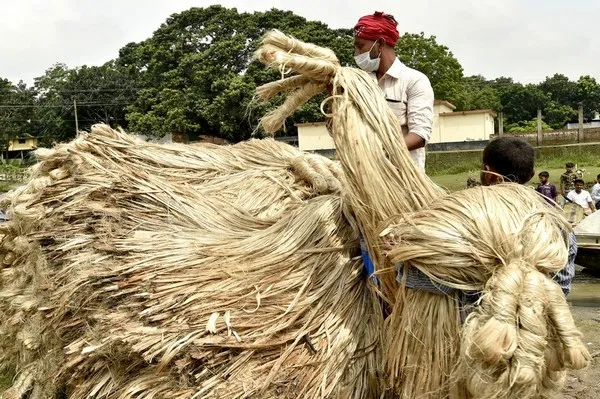
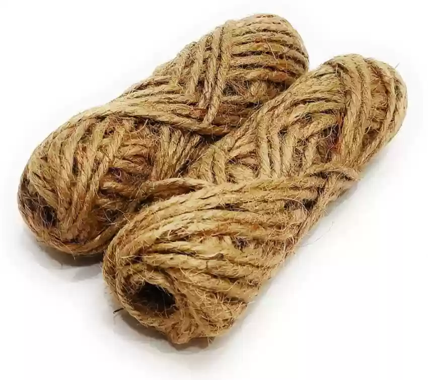
About the crop and its nutrients: Jute is a long, soft, and shiny natural fiber crop used primarily for
making textiles, sacks, and ropes.
Market share in Tripura: Jute cultivation has a moderate market share in Tripura, with farmers growing
jute as a cash crop.
Soil type: Jute thrives in well-drained, fertile, and sandy loam soils.
Season: Jute is primarily cultivated during the monsoon season, from June to October.
Export destinations: Jute fiber produced in Tripura is often exported to various states across India for
processing and manufacturing.
फसल और उसके पोषक तत्वों के बारे में: जूट एक लंबी, मुलायम और चमकदार प्राकृतिक रेशे वाली फसल है जिसका
उपयोग मुख्य रूप से कपड़ा, बोरियां और रस्सियाँ बनाने के लिए किया जाता है।
त्रिपुरा में बाजार हिस्सेदारी: त्रिपुरा में जूट की खेती की बाजार हिस्सेदारी मध्यम है, जहां किसान नकदी
फसल के रूप में जूट उगाते हैं।
मिट्टी का प्रकार: जूट अच्छी जल निकासी वाली, उपजाऊ और रेतीली दोमट मिट्टी में पनपता है।
मौसम: जूट की खेती मुख्य रूप से जून से अक्टूबर तक मानसून के मौसम में की जाती है।
निर्यात गंतव्य: त्रिपुरा में उत्पादित जूट फाइबर को अक्सर प्रसंस्करण और विनिर्माण के लिए भारत भर के
विभिन्न राज्यों में निर्यात किया जाता है।
6. PLUSES / 6. प्लस
 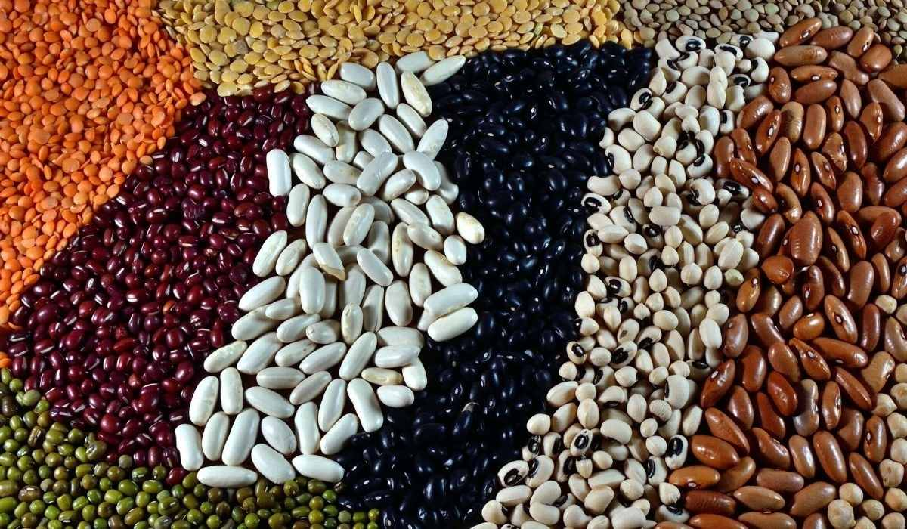
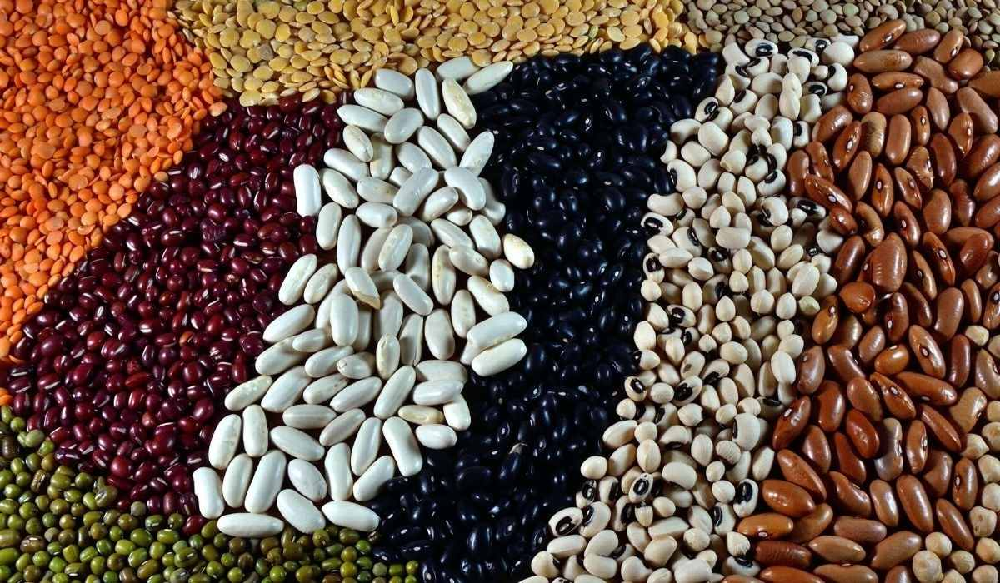
About the crops and their nutrients: Pulses, including lentils and chickpeas, are leguminous crops rich
in protein, dietary fiber, vitamins, and minerals.
Market share in Tripura: Pulse cultivation contributes to the agricultural diversity of Tripura,
although it may have a relatively smaller market share compared to staple crops like rice.
Soil type: Pulses thrive in well-drained soils with good organic matter content, including sandy loam
and clayey soils.
Season: Pulses are primarily cultivated during the Rabi season, from November to April.
Export destinations: Pulses produced in Tripura are often consumed domestically, and surplus production
may be exported to other states.
फसलों और उनके पोषक तत्वों के बारे में: दालें और चने सहित दालें, प्रोटीन, आहार फाइबर, विटामिन और खनिजों
से भरपूर फलियां वाली फसलें हैं।
त्रिपुरा में बाजार हिस्सेदारी: दलहन की खेती त्रिपुरा की कृषि विविधता में योगदान देती है, हालांकि चावल
जैसी मुख्य फसलों की तुलना में इसकी बाजार हिस्सेदारी अपेक्षाकृत कम हो सकती है।
मिट्टी का प्रकार: दलहनें अच्छे जल निकास वाली अच्छी कार्बनिक पदार्थ वाली मिट्टी में अच्छी तरह पनपती हैं,
जिसमें बलुई दोमट और चिकनी मिट्टी शामिल हैं।
मौसम: दालों की खेती मुख्य रूप से रबी मौसम के दौरान नवंबर से अप्रैल तक की जाती है।
निर्यात गंतव्य: त्रिपुरा में उत्पादित दालें अक्सर घरेलू स्तर पर खपत की जाती हैं, और अधिशेष उत्पादन को
अन्य राज्यों में निर्यात किया जा सकता है।
7. GINGER / 7. अदरक
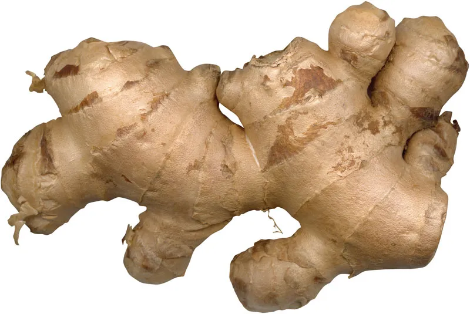
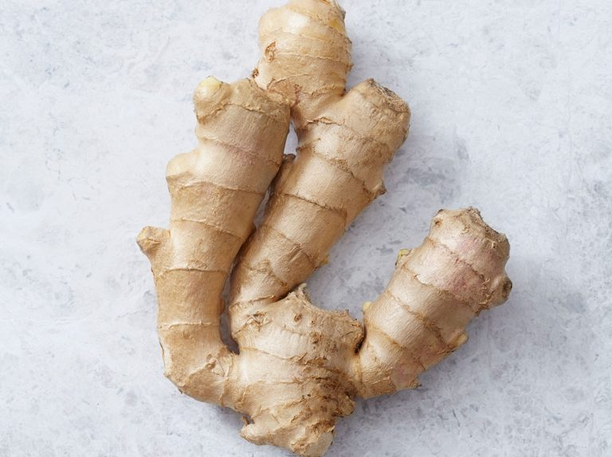
About the crop and its nutrients: Ginger is a flowering plant widely used as a spice and for its
medicinal properties. It contains bioactive compounds with anti-inflammatory and antioxidant effects.
Market share in Tripura: Ginger cultivation has a significant presence in Tripura, with farmers
cultivating both for domestic consumption and commercial purposes.
Soil type: Ginger grows well in well-drained, sandy loam soils with good organic matter content.
Season: Ginger is primarily cultivated during the monsoon season, from June to October.
Export destinations: Ginger produced in Tripura is exported to various states within India and also to
international markets, with major export destinations including countries in the Middle East, Southeast
Asia, and Europe.
फसल और उसके पोषक तत्वों के बारे में: अदरक एक फूल वाला पौधा है जिसका व्यापक रूप से मसाले के रूप में और
इसके औषधीय गुणों के लिए उपयोग किया जाता है। इसमें एंटी-इंफ्लेमेटरी और एंटीऑक्सीडेंट प्रभाव वाले
बायोएक्टिव यौगिक होते हैं।
त्रिपुरा में बाजार हिस्सेदारी: त्रिपुरा में अदरक की खेती की महत्वपूर्ण उपस्थिति है, किसान घरेलू खपत और
वाणिज्यिक दोनों उद्देश्यों के लिए इसकी खेती करते हैं।
मिट्टी का प्रकार: अदरक अच्छे जल निकास वाली, अच्छे कार्बनिक पदार्थ वाली रेतीली दोमट मिट्टी में अच्छी तरह
उगता है।
मौसम: अदरक की खेती मुख्य रूप से मानसून के मौसम में, जून से अक्टूबर तक की जाती है।
निर्यात गंतव्य: त्रिपुरा में उत्पादित अदरक को भारत के विभिन्न राज्यों और अंतरराष्ट्रीय बाजारों में
निर्यात किया जाता है, जिसमें मध्य पूर्व, दक्षिण पूर्व एशिया और यूरोप के देशों सहित प्रमुख निर्यात गंतव्य
शामिल हैं।
8. OILSEEDS / 7. तिलहन
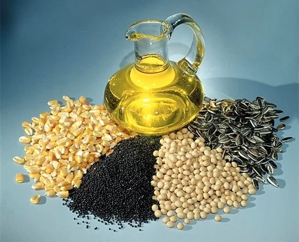
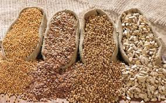
About the crops and their nutrients: Mustard and sesame are oilseed crops rich in healthy fats, protein,
vitamins, and minerals.
Market share in Tripura: Oilseed cultivation, including mustard and sesame, contributes to the overall
agricultural output of Tripura, albeit with varying market shares.
Soil type: Mustard and sesame can be grown in a wide range of soil types, including sandy loam, clayey,
and alluvial soils.
Season: Mustard and sesame are predominantly cultivated during the Rabi season, from November to April.
Export destinations: Oilseeds produced in Tripura are often processed locally for oil extraction and
used for both domestic consumption and exported to other states.
फसलों और उनके पोषक तत्वों के बारे में: सरसों और तिल स्वस्थ वसा, प्रोटीन, विटामिन और खनिजों से भरपूर
तिलहन फसलें हैं।
त्रिपुरा में बाजार हिस्सेदारी: सरसों और तिल सहित तिलहन की खेती त्रिपुरा के समग्र कृषि उत्पादन में योगदान
करती है, हालांकि बाजार हिस्सेदारी अलग-अलग होती है।
मिट्टी का प्रकार: सरसों और तिल को रेतीली दोमट, चिकनी मिट्टी और जलोढ़ मिट्टी सहित विभिन्न प्रकार की
मिट्टी में उगाया जा सकता है।
मौसम: सरसों और तिल की खेती मुख्य रूप से रबी मौसम के दौरान नवंबर से अप्रैल तक की जाती है।
निर्यात गंतव्य: त्रिपुरा में उत्पादित तिलहनों को अक्सर तेल निष्कर्षण के लिए स्थानीय स्तर पर संसाधित किया
जाता है और घरेलू खपत के लिए उपयोग किया जाता है और अन्य राज्यों में निर्यात किया जाता है।